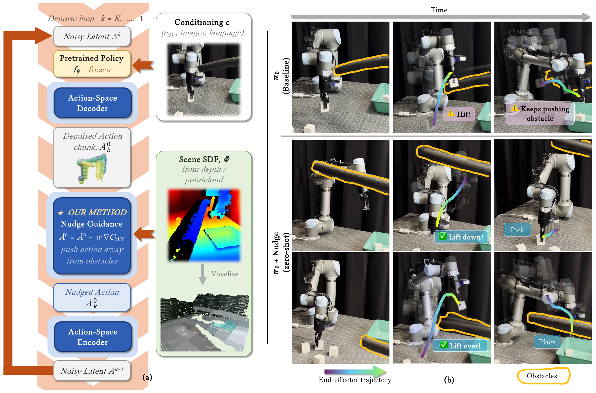
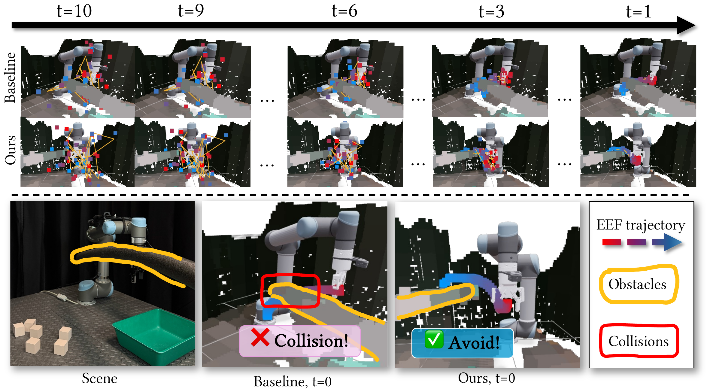
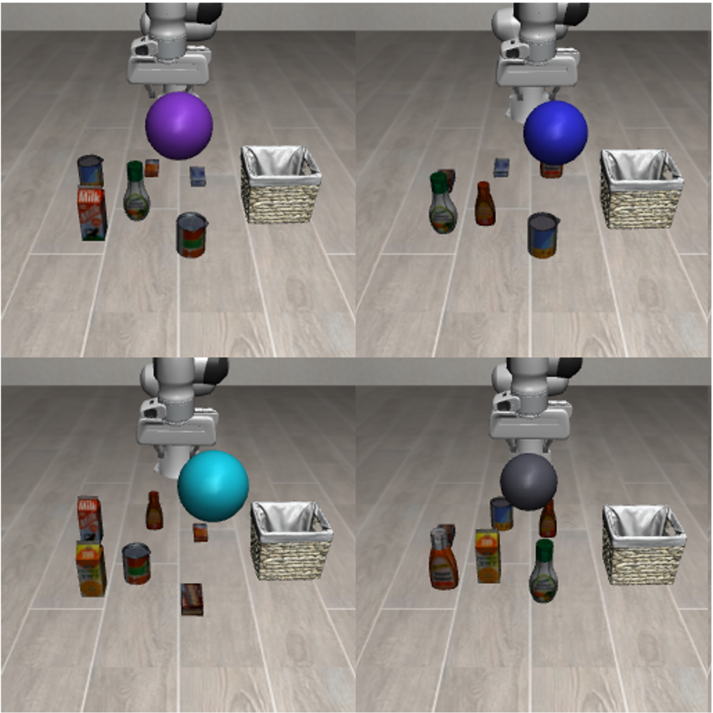

Zero-Shot Reactive Obstacle Avoidance for Generative Robot Policies
NUDGE: Nudge Update via Differentiable GEometry
Abstract
We propose NUDGE (Nudge Update via Differentiable GEometry), a training-free obstacle-avoidance procedure that can be incorporated in any robot policy based on diffusion or flow matching, including diffusion policies and vision-language-action models. Our work injects gradients from a signed distance field, a function returning each point's distance to the nearest obstacle, into the policy at inference time to steer it away from obstacles. It supports any common action parameterization, from absolute or relative joint poses to end-effector poses, through a differentiable joint-trajectory decoder. Experiments show that NUDGE preserves the policy's task distribution and runs reactively in real time.
How NUDGE Works

(a) NUDGE turns a live point cloud into a signed distance field and injects its gradient into the denoising loop. (b) The baseline collides with the pool noodle; NUDGE lifts over it.
- Training-free & model-agnostic — works on any diffusion or flow-matching action-chunk policy, including VLAs.
- Preserves the task distribution while avoiding obstacles, across two sim benchmarks.
- Real-time on a real robot — only 2.5 ms per action chunk on a π0 VLA driving a UR5.
Real-Robot Deployment & Timing

Across denoising steps (t=10→0) the baseline collides with the pool noodle while NUDGE pushes the
action chunk clear. Guidance runs only on the last two steps, adding just
2.46 ms end-to-end under torch.compile.
| Stage | π0 (ms) | π0 + ours (ms) | Δ (ms) |
|---|---|---|---|
| Observation pipeline (ZMQ I/O + host→GPU) | 5.06 | 5.54 | +0.48 |
| Vision + language prefix encode | 8.94 | 9.01 | +0.07 |
| Causal prefill | 17.02 | 17.48 | +0.46 |
| Denoising loop (10 steps) | 72.40 | 76.38 | +3.98 |
| ↪ NUDGE guidance (last 2 steps) | — | 3.76 | +3.76 |
| Post-processing | 0.16 | 0.20 | +0.04 |
| End-to-end (eager PyTorch) | 104.76 | 109.90 | +5.14 |
End-to-end (torch.compile) | 34.41 | 36.87 | +2.46 |
Preserving the Task Manifold
A diffusion policy must track a sphere, avoid a random box obstacle, and stay on the sphere manifold. NUDGE balances all three for the highest overall success.
Baseline (Vanilla)
Post-Projection
NUDGE (ours)
| Method | Success ↑ | Reach ↑ | Coll. Ep. ↓ | Coll. Rate ↓ | On-Sphere ↑ | Sphere Err. (cm) ↓ |
|---|---|---|---|---|---|---|
| Vanilla | 37.0% | 82.0% | 54.0% | 16.4% | 84.3% | 2.78 |
| Post-Projection | 25.0% | 29.0% | 14.5% | 4.7% | 56.4% | 4.84 |
| RAIL | 50.0% | 50.0% | 0.0% | 0.00% | 80.3% | 3.16 |
| Ours (w=20) | 42.0% | 73.0% | 47.0% | 13.8% | 80.5% | 3.00 |
| Ours (w=100) | 66.5% | 73.0% | 10.0% | 0.91% | 83.6% | 2.86 |
| Ours (w=200) | 71.5% | 73.5% | 2.5% | 0.21% | 83.0% | 2.87 |
Generalization in Simulation

We insert one spherical obstacle on the transport path of a π0.5 VLA across LIBERO-Object's 10 tasks. Success improves on 9 of 10 tasks and collisions drop to near zero.
We do not yet model collisions between the robot's grasped object and the environment, and leave this to future work. This shows up in the tomato sauce case, whose long bottle our single-sphere payload model does not capture.
| Task | Success Rate ↑ | Coll. Rate (%) ↓ | ||
|---|---|---|---|---|
| Vanilla | Ours | Vanilla | Ours | |
| Can | 50% | 90% | 5.7 | 0.0 |
| Cheese | 40% | 50% | 6.6 | 0.6 |
| Dressing | 20% | 50% | 4.5 | 0.0 |
| BBQ | 0% | 10% | 4.7 | 0.0 |
| Ketchup | 20% | 30% | 11.8 | 0.0 |
| Tomato | 0% | 0% | 31.2 | 0.2 |
| Butter | 90% | 100% | 6.1 | 0.0 |
| Milk | 0% | 30% | 23.1 | 1.2 |
| Pudding | 70% | 100% | 28.6 | 1.7 |
| Juice | 10% | 30% | 9.1 | 1.5 |
Watch the Rollouts
Same scene and obstacle per episode — directly comparable.
Baseline (π0.5)
NUDGE (ours)
BibTeX
@inproceedings{nudge2026,
title = {Zero-Shot Reactive Obstacle Avoidance for Generative Robot Policies},
author = {Anonymous},
booktitle = {Conference on Robot Learning (CoRL)},
year = {2026},
note = {Under review}
}